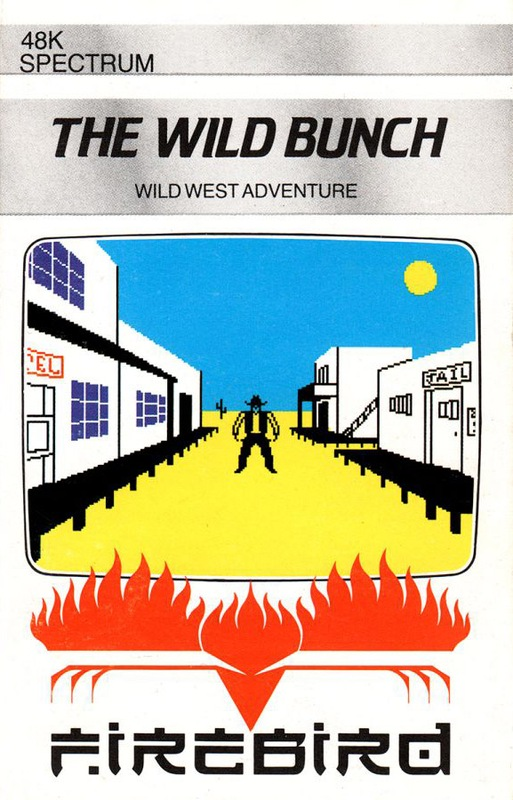
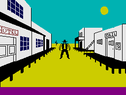

The Wild Bunch


{kind=link}

| Publisher: | Firebird |
| Price: | £1.99 |
| Year: | 1984 |
| Source: | Your Sinclair, Issue 8 |
The Wild Bunch was one of the very early games released before CRASH was published, so it never got a review. There was this review in Your Sinclair issue 8.

Luke: Yeeehaah! Not a bad game this, pardners, and at only £1.99, excellent value for money. Not that it's anything more than a glorified text adventure ... coupled with some very imaginative attempts to pretty the whole affair up with simple graphics and sideline things to do.
With only 50 bucks in your pocket, you come across a body lying in the street. You pick up his gun out of interest and before you know it, the local sheriff has taken it into his head that you're responsible for the stiff and sets a Pinkerton agent on your trail. But you know the real culprit is one of the infamous Wild Bunch and you set off to prove your innocence even if it means you've got to kill everyone in sight!
You've five towns to investigate and, at each one, you can enter the saloon, telegraph office, sheriff's office or local store. At the telegraph office, you can bribe the clerk to give you information on the whereabouts of the gang of desperados and the Pinkerton agent — a good investment as the Pinkerton man arrests on sight The sheriffs office gives you a chance to Check out the descriptions of the Wild Bunch — so that you can challenge them whenever you meet. The store, of course, is full of all the provisions you need for your perilous journeys such as guns, bullets, food, clothing and so on.
If you wanna have a lot of fun try the saloon. Here, you can play poker against the local gambler and boost your funds. Careful play can double your spending money in no time at all. You'll need it later after all you've spent on provisions and bribes, You can also boost your strength points with a couple of shots of red- eye or beer — slurp! It's here you're likely to come face-to- face with one of the Wild Bunch. You can always attempt to arrest him on the spot or take him out on to the street for a shoot-out.
Travelling between towns can be costly on your resources. For example, on a typical journey between Nuggett City and Bulletsville — a trip that'll take you ten days on foot — I managed to kill a buffalo, a vulture, two bounty hunters, a trapper and a Red Indian. Obviously the Wild Bunch aren't the only murderers in this game!
There are three levels of difficulty, and the game is extremely difficult at its hardest level. Dying is easy — you can drink too much in the saloon (Typical! Ed), die from exposure up in the mountains, get scragged by all sorts of wandering weirdos on your journeys between towns, or just get shot up in the street by the Wild Bunch.
Overall, though, it's a text adventure — don't look for any wildly exciting graphics. On the other hand, it's an absorbing game ... and what do you expect for £1.99. I really cant say anything other than I was pleasantly surprised and thoroughly enjoyed my jaunt into the Wild West of The Wild Bunch.
| Graphics: | 5/10 |
| Playability: | 7/10 |
| Value for Money: | 10/10 |
| Addictiveness: | 8/10 |